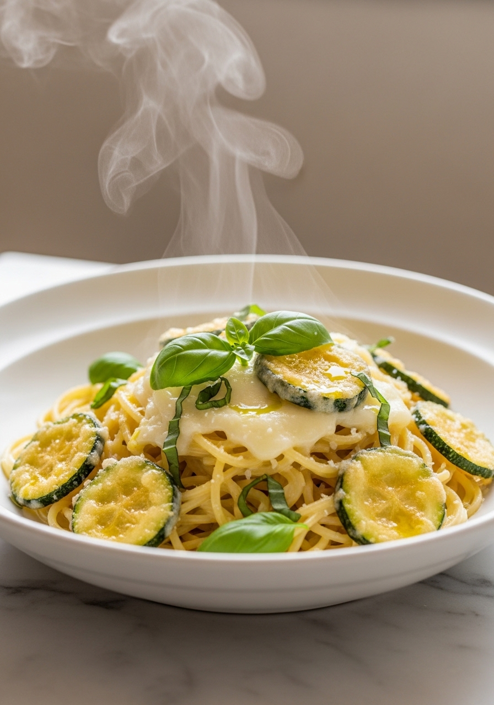
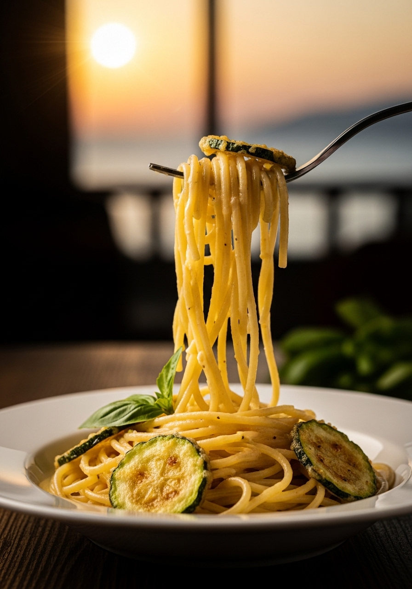

La storia vuole che gli spaghetti alla Nerano siano stati inventati negli anni '50 dalla famiglia Del Cantinone, un ristorante affacciato sul mare nel villaggio di Nerano, nel cuore della Costiera Amalfitana. Diventati virali in tutto il mondo grazie a Stanley Tucci e al suo programma 'Searching for Italy', la ricetta originale rimane semplice, umile e straordinariamente buona: zucchine fritte riposate una notte, Provolone del Monaco mantecato con l'acqua di cottura, basilico fresco. Nient'altro. La perfezione campana.

ViraleGli spaghetti alla Nerano nascono negli anni Cinquanta nella piccola baia di Nerano, un villaggio di pescatori incastonato tra i Monti Lattari e il Mare Tirreno, nel cuore della Penisola Sorrentina. La famiglia Del Cantinone, leggendaria nella zona, inventò questo piatto quasi per caso: zucchine abbondanti nel Golfo di Napoli, il Provolone del Monaco prodotto sui monti vicini e la creatività campana. Per decenni rimase un segreto della costiera. Poi, nel 2021, lo chef e scrittore Stanley Tucci lo assaggiò durante la lavorazione della sua serie televisiva "Searching for Italy" e la sua reazione di pura estasi davanti alla telecamera diventò virale in tutto il mondo. Da quel momento, milioni di persone hanno iniziato a cercare la "ricetta originale degli spaghetti alla Nerano". Il piccolo villaggio di 700 anime è diventato una meta gastronomica internazionale.
Il Provolone del Monaco è un formaggio a pasta filata DOP prodotto esclusivamente nei 13 comuni della Penisola Sorrentina, stagionato almeno 6 mesi in cantine a temperatura controllata. Il suo nome curioso deriva dai casari che scendevano a Napoli avvolti in mantelli scuri che ricordavano le tonache dei monaci. Ha un sapore intenso, leggermente piccante, con note burrosa e lattiche che si sviluppano durante la lunga stagionatura. La sua caratteristica fondamentale è la filatura a caldo che crea quelle proteine elastiche che, quando mantecate con l'acqua di cottura, formano una crema vellutata impossibile da replicare con altri formaggi. Se non lo trovi, il Caciocavallo stagionato (almeno 6 mesi) è l'unico sostituto accettabile.
Ingredienti
Procedimento

Gli spaghetti alla Nerano non si conservano bene una volta mantecati: il formaggio si indurisce e la pasta si incolla rapidamente. Prepara sempre la quantità esatta per il pasto e servi subito. Le zucchine fritte, al contrario, si possono e si DEVONO preparare il giorno prima — questo passaggio migliora drasticamente il risultato. Alcune varianti moderne aggiungono gamberi saltati o bottarga di muggine grattugiata, ma la versione originale della famiglia Del Cantinone è rigorosamente solo zucchine, formaggio e basilico. Non aggiungere panna, non aggiungere cipolla, non aggiungere limone. La semplicità è la forza di questo piatto.
Il riposo in frigorifero elimina l'umidità in eccesso e trasforma la consistenza delle zucchine fritte: diventano più concentrate di sapore, più morbide e, soprattutto, non rilasciano acqua durante la mantecatura — che renderebbe la salsa acquosa invece che cremosa. È il segreto più importante della ricetta originale.
Gli spaghetti sono tradizionali perché la loro superficie liscia cattura perfettamente la crema di formaggio. I linguine o gli spaghettoni funzionano altrettanto bene. Evita la pasta corta: la forma lunga è parte dell'identità del piatto e permette una mantecatura più efficace.
Il Caciocavallo stagionato (minimo 6 mesi) è il sostituto più vicino per struttura e sapore. In alternativa, puoi usare metà Pecorino Romano e metà Parmigiano Reggiano. Il risultato sarà meno 'campano' ma comunque ottimo. Evita assolutamente mozzarella, scamorza e formaggi freschi.
Il formaggio è stato aggiunto con la padella ancora sul fuoco o troppo calda. Togli sempre la padella dal fuoco prima di aggiungere il formaggio e aggiungi l'acqua di cottura tiepida (non bollente) a piccole quantità, mescolando rapidamente. La temperatura ideale dell'impasto è 70-75°C.
La frittura profonda è fondamentale: crea una superficie dorata e caramellata che conferisce profondità di sapore e una consistenza specifica impossibile da replicare con la grigliatura. Le zucchine grigliate rilasciano troppa acqua e non creano la stessa consistenza cremosa durante la mantecatura.